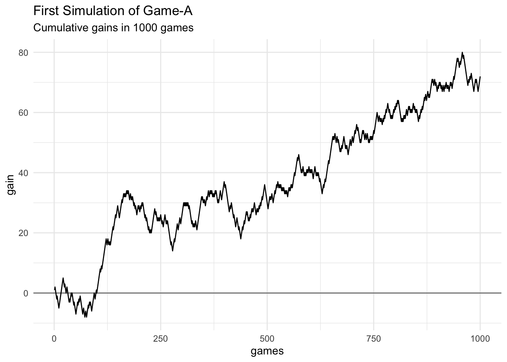
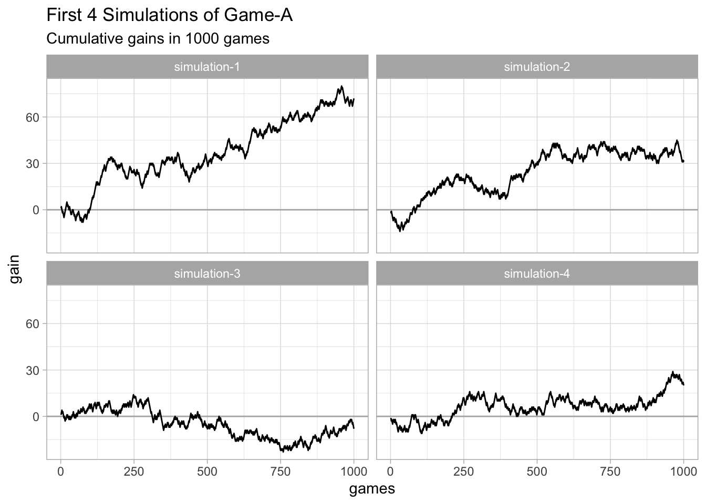
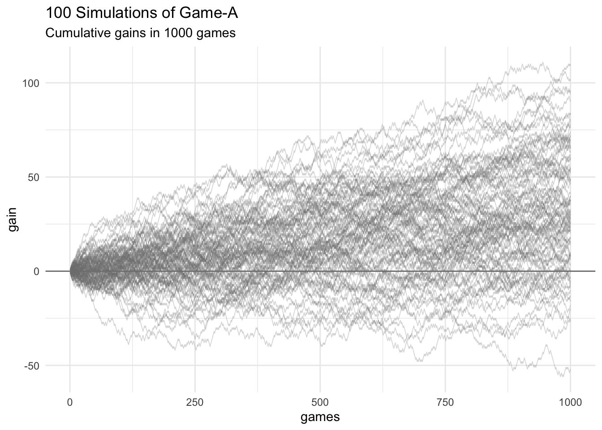

7 Running Even More Simulations
In the previous section we discussed one possible strategy to run three
simulations, each one consisting of five games. From the programming point of
view, the core of this strategy is the utilization of embedded for() loops.
Now, three simulations and five games is obviously not enough. To get a better feeling of the probability of winning Game-A—approximated by the proportion of wins—we need to take things to the next level: with more simulations, and many more games.
Exactly how many more simulations, and how many more games? There is no
definitive answer to this question. Obviously the more games and simulations,
the better. To keep things simple, but also fairly realistic, I think 100
simulations and 1000 games is a reasonable choice. The following diagram
illustrates what the games matrix (of 1000 rows and 4 columns) for each of
the 100 simulations could look like, and also de derived matrix simulations
having 1000 rows and 100 columns:

The following code uses 1000 games and 100 simulations. This allows us to play Game-A for a total of \(1,000 \times 100 = 100,000\) times. With this many games, we can safely calculate the average proportion of wins, and use this value to estimate the probability of winning Game-A:
set.seed(753)
# main inputs
die = 1:6
number_games = 1000
number_sims = 100
# matrix to store simulation outputs
simulations = matrix(0, nrow = number_games, ncol = number_sims)
for (sim in 1:number_sims) {
games = matrix(0, nrow = number_games, ncol = 4)
for (game in 1:number_games) {
games[game, ] = sample(die, size = 4, replace = TRUE)
}
any_sixes = apply(games, 1, function(x) any(x == 6))
simulations[ ,sim] = ifelse(any_sixes, 1, -1)
}
rownames(simulations) = paste0("game", 1:number_games)
colnames(simulations) = paste0("sim", 1:number_sims)
total_wins = apply(simulations, 2, function(x) sum(x==1))
prop_wins = total_wins / number_games
# mean win-proportion
mean(prop_wins)## [1] 0.51674As you can tell, the average proportion of wins turns out to be 0.51674 which is pretty close to the theoretical probability of winning Game-A
\[\begin{align*} Prob(\text{at least one six in 4 rolls}) &= 1 - Prob(\text{no six in 4 rolls}) \\ &= 1 - \left( \frac{5}{6} \right)^4 \\ &= 0.517747 \end{align*}\]
Of course, if you change the random seed and rerun this simulation, you will very likely obtain a slightly different proportion of wins. But still close enough to the actual theoretical probability of winning Game-A.
7.1 Graphing Cumulative Gains
Like in chapter Playing Game-A 100 times, let’s visualize what’s going on with the sequence of cumulative gains—assuming you gain $1 if you win a game, and you gain -$1 if you lose a game.
7.1.1 Plotting the first simulation
The main data object that we have is the matrix simulations. This is a
1000 by 100 matrix. So let’s begin with a ggplot to
visualize the cumulative gains of the games in the first simulation. That is,
the games in the first column of this matrix.
Because we are interested in making a graph with "ggplot2", the first step
consists of creating a data frame. Perhaps the simplest thing to do is to
assemble a 2-column table dat_sim1: column games for the number of games,
and another column gain for the cumulative gain in the games of the first
simulation.
dat_sim1 = data.frame(
games = 1:number_games,
gain = cumsum(simulations[ ,1])
)
head(dat_sim1, n = 10)## games gain
## game1 1 1
## game2 2 2
## game3 3 1
## game4 4 0
## game5 5 -1
## game6 6 -2
## game7 7 -1
## game8 8 -2
## game9 9 -3
## game10 10 -4The next step is to pass dat_sim1 to ggplot() and friends to obtain a
timeline, very similar to the one obtain in section
Cumulative Gains with ggplot2
ggplot(data = dat_sim1, aes(x = games, y = gain)) +
geom_hline(yintercept = 0, color = "gray50") +
geom_line() +
theme_minimal() +
labs(title = "First Simulation of Game-A",
subtitle = "Cumulative gains in 1000 games")
7.1.2 Plotting the first four simulations
Let’s take a further step by considering the cumulative gains in the first four simulations.
Because we need to obtain the cumulative gains in each simulation, it’s better
if we apply() the function cumsum() on each column of the matrix
simulations. This will produce another 1000-by-100 matrix that we’ll name
cum_gain_prog:
# 1000-by-100 matrix of cumulative gains
cum_gain_prog = apply(simulations, 2, cumsum)As usual, to call ggplot() we must have the input data into a data.frame
(or a tibble) object. Here’s one way to create a table dat_4sims containing
three columns: 1) column games, 2) gain containing the cumulative gain,
and 3) simulation for the associated simulation.
# table with first four simulations
dat_4sims = data.frame(
games = rep(1:number_games, times = 4),
gain = as.vector(cum_gain_prog[ ,1:4]),
simulation = rep(paste0("simulation-", 1:4), each = number_games)
)Now we are ready to graph the timelines for the first four simulations. In this case, we’ll use facets to better distinguish between each simulation:
ggplot(data = dat_4sims, aes(x = games, y = gain)) +
geom_hline(yintercept = 0, color = "gray70") +
geom_line() +
facet_wrap(~ simulation) +
theme_light() +
labs(title = "First 4 Simulations of Game-A",
subtitle = "Cumulative gains in 1000 games")
Notice the different trends in each simulation. The 1000 games played in simulations 1, 2, and 4 resulted in a positive gain. In contrast, the final gain in simulation 3 turned out to be negative.
7.1.3 Plotting all simulations
Out of curiosity let’s graph the cumulative gains of all 100 simulations.
# converting matrix into data.frame
dat_cum_gain = as.data.frame(cum_gain_prog)
dat_cum_gain$games = 1:number_games
# reshaping table into "long" or "tall" format
tbl_cum_gain = pivot_longer(
dat_cum_gain,
cols = starts_with("sim"),
names_to = "simulation",
values_to = "gain")We can now proceed with ggplot()
ggplot(data = tbl_cum_gain, aes(x = games, y = gain)) +
geom_line(aes(group = simulation),
color = "gray50", alpha = 0.3, size = 0.3) +
geom_hline(yintercept = 0, color = "gray50") +
theme_minimal() +
labs(title = "100 Simulations of Game-A",
subtitle = "Cumulative gains in 1000 games")
As you can tell, there is a lot going on in this graphic. Essentially, we
have 100 lines (each one corresponds to a given simulation),
and a considerable amount of overlapping between all of them. Despite
adding some transparency to the lines—with the alpha argument inside
geom_line()—it’s hard to follow the path of any single line.
One thing to pay attention to is that the majority of lines are above the horizontal zero-baseline. But not all of them, as reflected by a small proportion of lines that end up below the zero-baseline. Nevertheless, this plot allows us to see an undeniable fact: in the long run, playing Game-A gives you a decent chance of ending with a positive gain. No wonder why Chevalier De Méré was able to make some money with this game of chance.